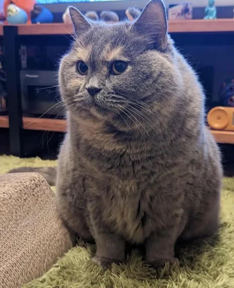
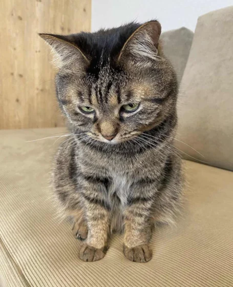
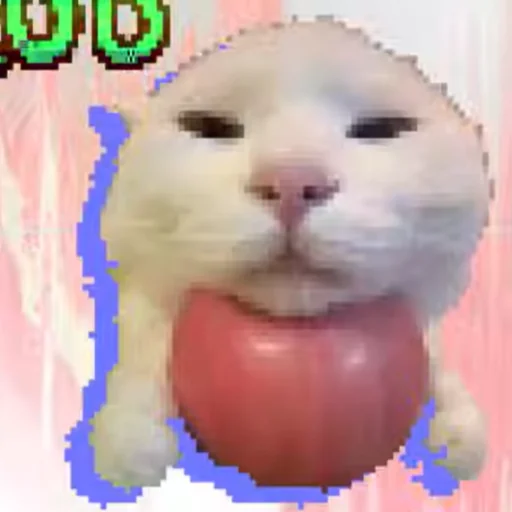
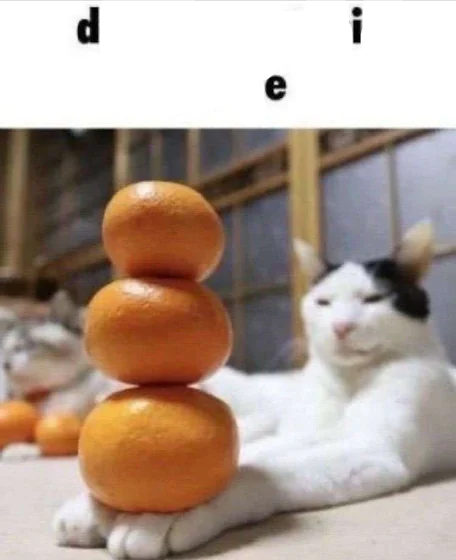

01 / youtubewatch there ↗
space invaders, on a pcb.
custom pcb, c, and an mspm0+. ece319k.
circuits, code, videos.
sometimes the board works.
custom pcb, c, and an mspm0+. ece319k.
song i made.




custom pcb. buttons, pots, lcd, and a dac. game logic in c.
bias, gain, bandwidth, and thd in cadence. compared loads and added source degeneration.
verilog on an artix-7. counters, adders, display timing, and testbenches.